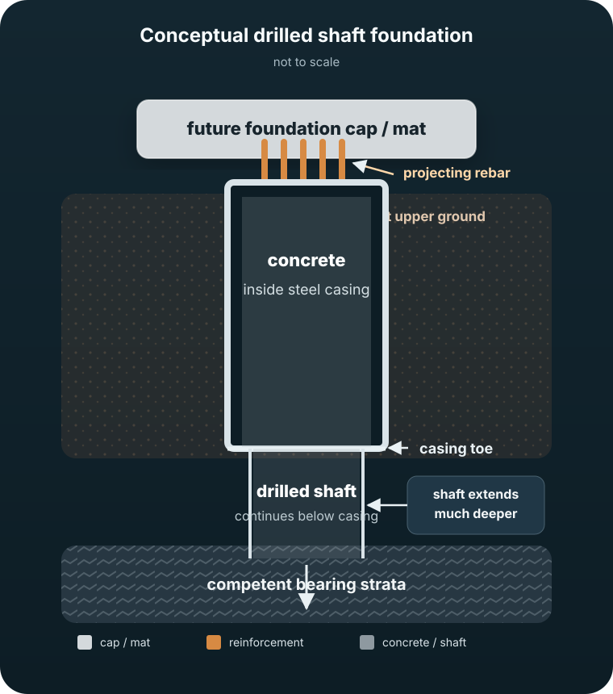

A living, photo-based explanation of the engineering visible on site: drilled shafts, steel casing, groundwater, reinforcement cages, concrete placement and the structural pattern slowly emerging beneath the future tower.
The site has moved from drilled-shaft installation into a revealing excavation-and-cutback phase. As soil is removed, longer casing lengths become exposed; upper steel casing is then cut away, leaving concrete shaft heads and projecting reinforcement visible. The site observer has also directly seen removed casing flattened, loaded and hauled away for recycling.
Markings such as 27, 39, 40 and 49 identify shaft locations. They do not establish diameters or the total number of foundations.
Installation, excavation exposure, torch cutting, separated shell sections, flattening and haul-away for recycling are now all documented by photographs and direct site observation.
The surrounding soil is being removed around completed foundations, exposing more concrete and projecting reinforcement ahead of the next structural connection.
Important: This journal separates direct visual observations from engineering interpretation. Exact shaft diameters, depths, capacities, geotechnical layers and the final cap/mat design require project drawings or geotechnical records.
A long steel tube is advanced into the upper ground using a large casing-driving/rotary-vibratory system. This stabilizes weak or water-bearing soil.
The rotary rig drills through the casing and continues well below its toe. Buckets and clean-out tools repeatedly remove soil, rock fragments and water.
The site becomes very wet because the drilling is below groundwater. Fluid inside the bore can also help maintain stability against surrounding groundwater pressure.
Long cylindrical cages are lifted from horizontal, guided vertically and lowered inside the shaft. Different cage sizes reinforce the evidence for different shaft types.
A boom pump feeds concrete down into the shaft. As concrete fills the bore from depth upward, it displaces the water/fluid already occupying the hole.
As surrounding soil is excavated, upper casing becomes exposed and is cut away in sections. Removed steel is flattened, loaded and hauled away for recycling, revealing the concrete shaft head and projecting reinforcement for the next foundation connection.

Earlier in the project, the eventual fate of the casing was uncertain. Later scrap suggested cutback; September 15 photographs directly showed active cutting; September 16 observations connect that cutting to separated casing sections, flattening and recycling.
What remains uncertain: whether casing retained below the cutback has a structural role, and whether the shaft heads will connect through individual or grouped caps, grade beams, a mat, or some combination.
Selected images have engineering callouts. Switch to originals at any time. Tap a photo to enlarge it.
Active cutting, opened shells, separated casing sections and exposed concrete shaft heads now document the sequence directly.
The site observer has seen cut casing flattened by a large excavator, loaded into bins or dump trucks and hauled away for recycling.
Deeper excavation is uncovering concrete drilled-shaft heads and their projecting reinforcement.
This is structurally logical and consistent with their clustering, but the precise load map awaits the cap/mat reinforcement.
The next major clue will be horizontal reinforcing steel connecting the completed shaft heads.
Those values cannot be measured reliably from photographs. Project structural and geotechnical documents would resolve them.
New photographs can be added as the project progresses. Useful milestones to capture next include shaft-head trimming, horizontal cap/mat reinforcement, first pile caps or mat pours, core walls, columns, transfer structures and the first suspended floors.
A repeat photograph from the same window and zoom is invaluable for seeing how the structural pattern emerges over time.
Especially photograph exposed shaft heads, rebar connections and anything unfamiliar before it gets buried.
I can add them to the journal, annotate the engineering details and revise earlier hypotheses when the evidence improves.